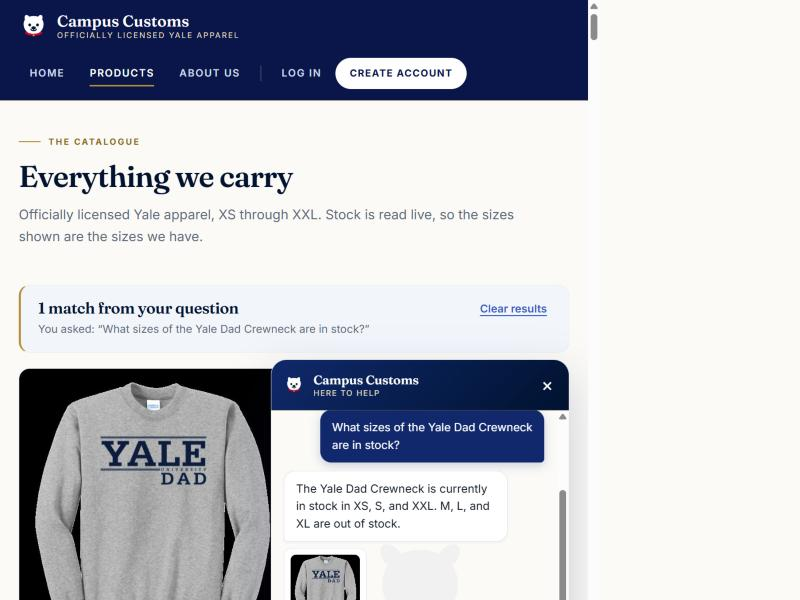
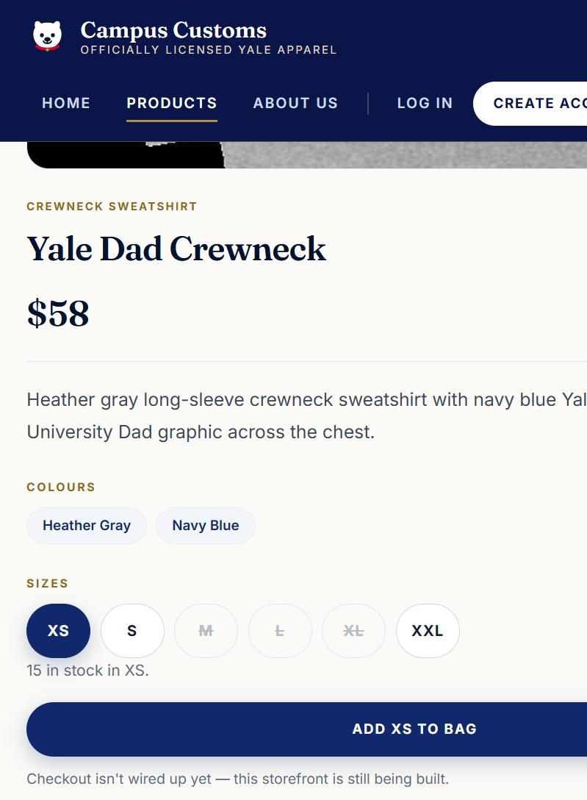
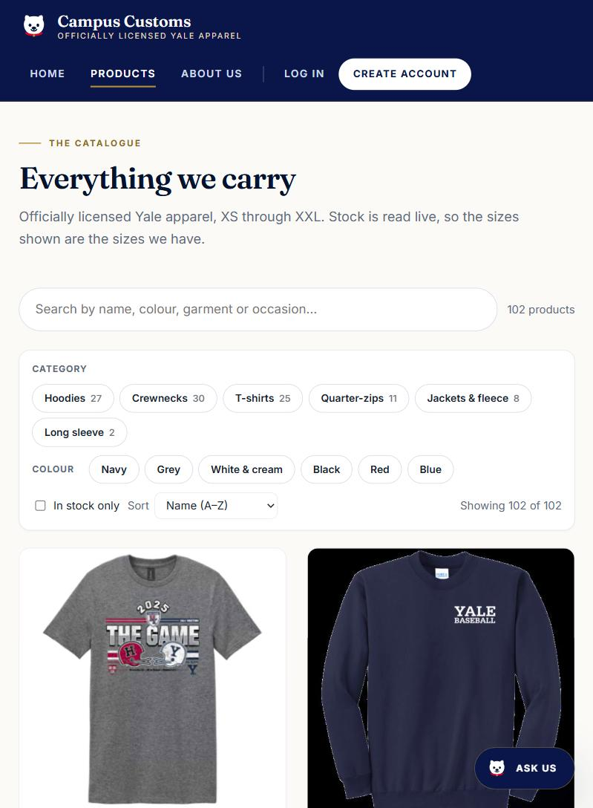
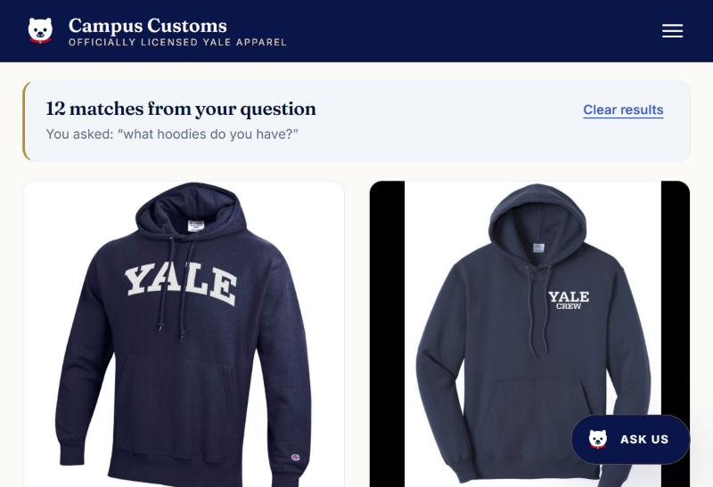
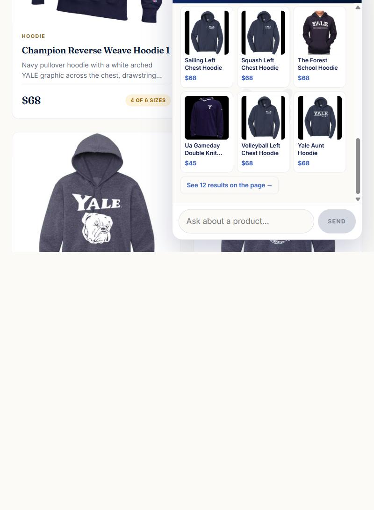
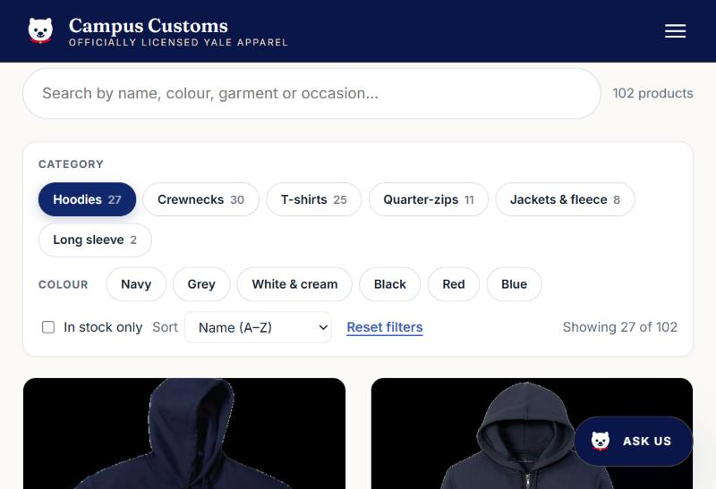
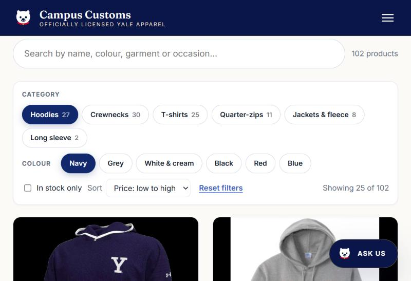

The chatbot reports real inventory from the database
The aim is to prove the assistant is reading live stock rather than producing plausible-sounding text. So the test product was chosen deliberately: Yale Dad Crewneck has three sizes at zero, which means a bot that is guessing will almost certainly get it wrong.
Ground truth, queried from the database first
| Size | XS | S | M | L | XL | XXL |
|---|---|---|---|---|---|---|
| Quantity | 15 | 8 | 0 | 0 | 0 | 15 |
So the correct answer is: in stock in XS, S and XXL; out of stock in M, L and XL.
What I asked
“What sizes of the Yale Dad Crewneck are in stock?”
What the assistant replied
“The Yale Dad Crewneck is currently in stock in XS, S, and XXL. M, L, and XL are out of stock.” — exact match, including all three zeros.


A category question makes matching product cards appear
The assistant does not just answer in prose — it cites catalogue ids, and the page turns those into real product cards. This check confirms a plain category question drives that, with no page reload and no separate results view.
Before

What I asked
“what hoodies do you have?”
After


Why this counts as working
- The cards appeared dynamically — no reload, no route change.
- They are the same
ProductCardused by the normal catalogue, so clicking one opens the ordinary product page. There is no separate chat-only detail view. - All twelve are genuine hooded garments from the catalogue (Champion Reverse Weave Hoodie 1, Crew Left Chest Hoodie, District Vit Hoodie Vintage Bulldog, and so on), each at its real price.
- Cards render only for ids a tool actually returned during that run — the Problem 9 hallucination guard — so nothing invented can appear.
search_catalogue
tool's result cap (limit is capped at 12), not a lookup
failure — the cap exists to keep a single reply from consuming the run's
tool budget. Every product shown is real and correctly priced, but the
reply's phrase “We have 12 hoodies” understates the range. A
shopper wanting all 27 gets them from the Hoodies filter
in Check 3.
Usability feature from Problem 9: product filtering and sorting
The first of the four Problem 9 improvements. 102 products in one grid is a wall, so the Products page gained category and colour filters, an in-stock toggle, and four sort orders.
Filtering by category

27 is the number that matters here. The database stores
garment_type as free text, and five different values describe
a hooded garment:
| garment_type value | products |
|---|---|
pullover hoodie | 18 |
hoodie | 5 |
full-zip hooded sweatshirt | 2 |
hooded sweatshirt | 1 |
hooded pullover sweatshirt | 1 |
| total | 27 |
A filter built on exact column values would have shown five near-duplicate chips and returned 18 for the obvious one. Because the filter groups raw values by case-insensitive substring, it returns all 27 — matching the database exactly.
Filters and sorting compose

With that sort applied the first six prices read
$45, $45, $68, $68, $68, $68 — correctly ascending. The colour
filter also merges navy and navy blue, which the
database stores as separate values.
garment_type spellings are accounted for.